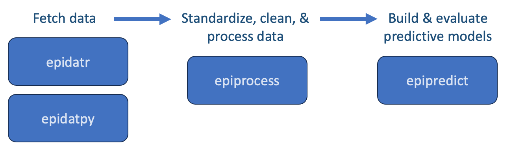

Motivation
The COVID-19 Pandemic required quick implementation of forecasting systems. Using reliable and validated forecasting methodology is crucial in the public health response to any fast-moving epidemic or pandemic. Tracking and forecasting indicators such as confirmed cases, hospitalizations and deaths are critical to understand disease spread, formulate appropriate public policy response, and to plan future health resource needs.
A forecasting task may be separated into several sub-tasks, with data preparation being the among the first. One could imagine the necessity of having standard processing tasks such as outlier detection and correction readily available at this stage. Additionally, these tasks should be tailored to the data structure, which should clearly include a geographic and a temporal component. Data revisions add a layer of complication as data from surveillance streams are often subject to latency and revision. Hence, working with data revisions should be facilitated, and models intended for production should be built and validated using only the data that would have been available on the prediction date rather than finalized values.
We take the view that forecasting models should not be imbued with too much unnecessary complexity. That is, everything should be made as simple as possible, but not simpler. In fact, robust yet simple models have consistently been top performers for Influenza Forecasting (Lutz et al. 2019) COVID-19 death forecasting (Cramer et al. 2022) and the basic AR model has been competitive with the top models used for COVID-19 forecasting (McDonald et al. 2021).
In line with this, custom software that has been specially curated for a modelling task is often not easily adaptable or able to be improved by other groups. Such software is hard for public health to borrow, customize and improve.
A brief overview of the epi* packages
Since early 2020, the CMU’s Delphi Research Group has worked with data partners to publicly disseminate information about numerous COVID-19 indicators, which we and others then use for nowcasting and short-term forecasting. Prior to that we worked mostly on influenza, dengue and norovirus modelling.
The overarching goal of the effort described here is to describe a set of interworking, community-driven packages built specifically for epidemiologic tracking and forcasting. To that end, the epi. universe is currently comprised of three main packages: {epidatr} (in Python {epidatpy}), {epiprocess}, and {epipredict}. Each has their own role in the forecasting process: The {epidatr} package is used to fetch data from the API, {epiprocess} is used to standardize, clean and process data, and finally the {epipredict} package is used for building (and to a lesser degree, evaluating) predictive models. Here is a diagram depicting the basic workflow for using these packages:

Here’s a brief overview about what each package offers…
epidatr - Obtain epidemiological surveillance data from Delphi’s Epidata API
- Quick access to data on the spread and impact of the COVID-19 pandemic
- Access to data about other diseases, including influenza, dengue, and more
- Provide geographic and temporal detail
- Tracked through several data streams
epiprocess - Basic processing operations and data structures
- Calculate rolling statistics
- Fill / impute gaps
- Examine correlations
- Store revision history smartly
- Inspect revision patterns
- Detect / correct outliers
epipredict - A forecasting framework
- Flatline forecaster
- AR-type models
- Backtest using the versioned data
- Easily create features
- Quickly pivot to new tasks
- Highly customizable for advanced users
The focus of this book is on {epiprocess} and {epipredict}. By the end of this book, you should be equipped with the tools and knowledge to build your own basic and customizable forecasting models. At that point, our hope is that some may take things a step further and leverage this package to build on it and advance the frontier of predictive modelling.